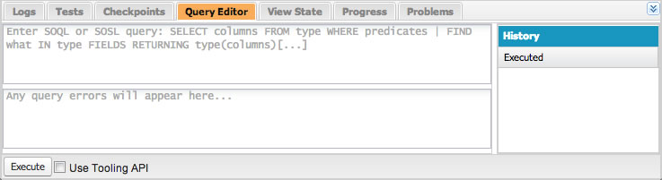

SOQL is the Salesforce Object Query Language. It is the language you use to retrieve data in Salesforce, and it's similar to SQL. You use the Salesforce Data Manipulation Language (DML) to insert, update and delete data. In this module, you use the Developer Console to familiarize yourself with SOQL and DML. In the next modules, you'll use SOQL and DML statements in Apex classes and triggers.
In the Developer Console, click the Query Editor tab at the bottom of the window

Enter the following SOQL statement and click the Execute button to retrieve conference sessions:
SELECT Id, Name, Session_Date__c, Level__c FROM Session__c
Execute the following statement to retrieve the beginner sessions (assuming you created any):
SELECT Id, Name, Session_Date__c, Level__c FROM Session__c
WHERE Level__c = 'Beginner'
Execute the following statement to retrieve a list of speakers ordered by first name and last name:
SELECT Id, First_Name__c, Last_Name__c, Email__c FROM Speaker__c
ORDER BY First_Name__c, Last_Name__c
Execute the following statement to to retrieve the conference schedule with session and speaker information:
SELECT Session__r.Name,
Session__r.Session_Date__c,
Speaker__r.First_Name__c,
Speaker__r.Last_Name__c
FROM Session_Speaker__c
ORDER BY Session__r.Session_Date__c, Session__r.Name
Because this is equivalent to a right join, this query will only return sessions with a speaker assignment.
In the Developer Console, click Debug > Open Execute Anonymous Window and execute the following statements to create a session:
Session__c session=new Session__c(Name='Advanced Apex', Level__c='Advanced');
insert session;
You can execute a SOQL statement in the Query Editor as described above to make sure the session was created.
Execute the following statements to update a session:
Session__c session = [SELECT Id FROM Session__c WHERE NAME='Advanced Apex'];
session.Level__c = 'Intermediate';
update session;